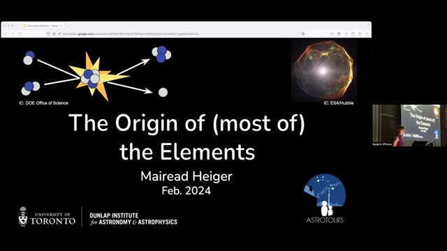
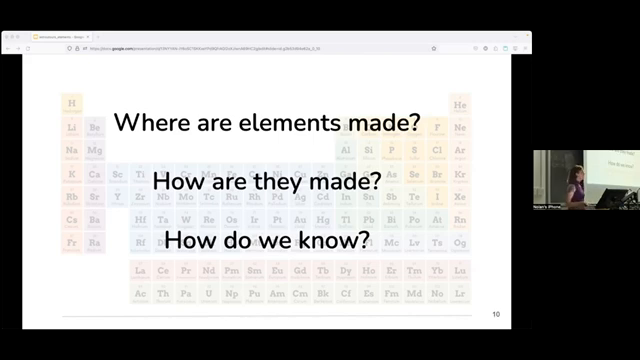
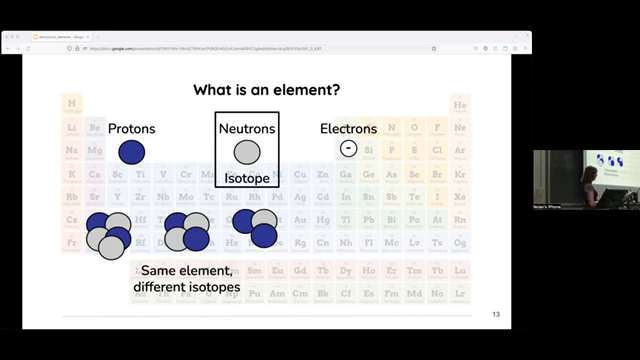
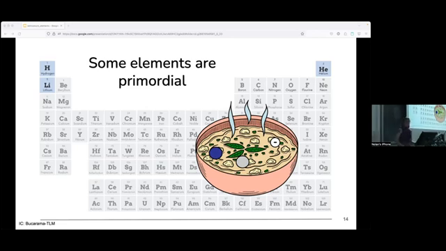
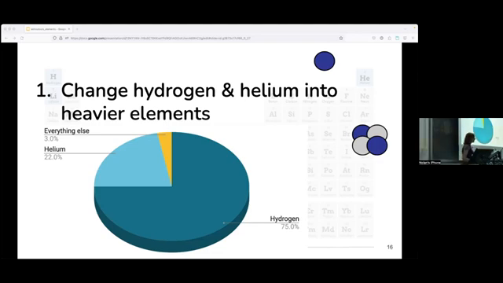
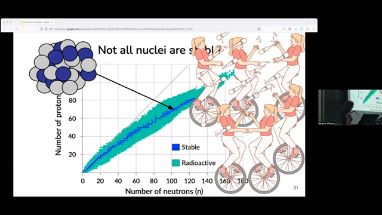
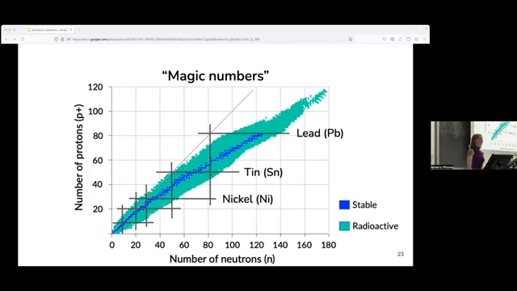
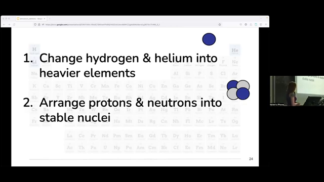
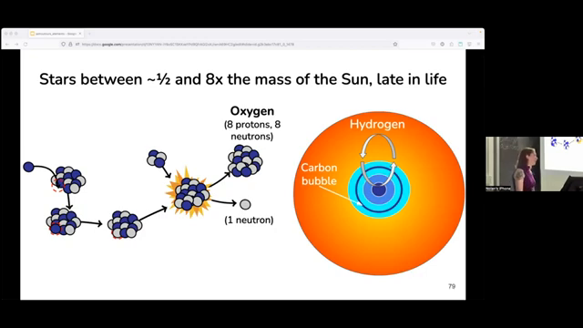
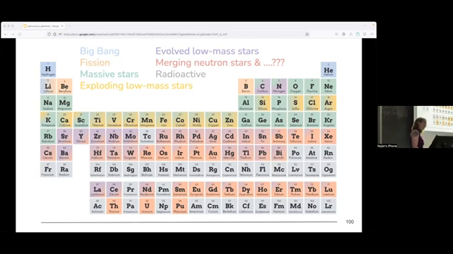

The Origin of (most of) the Elements
Mairead Heiger
Dunlap Institute for Astronomy & Astrophysics, University of Toronto
Feb. 2024
Introduction
Chemical elements are fundamental building blocks of the universe, forming the basis of molecules such as water, DNA, and the air we breathe. They are also found in their atomic form in various aspects of our daily lives, from the iron in our red blood cells to the mercury in thermometers. While the periodic table organizes elements based on their properties, it doesn't reveal their origins. This paper explores the cosmic origins of these elements, examining the processes by which they are formed and the astrophysical environments in which these processes occur.
The Building Blocks: Hydrogen and Helium
Elements are comprised of subatomic particles: protons, neutrons, and electrons. The number of protons defines an element, while the number of neutrons determines its specific isotope. The lightest elements, hydrogen and helium, along with trace amounts of lithium, were formed during the Big Bang. This primordial nucleosynthesis occurred in the universe's first few minutes, within a hot, dense "cosmic soup." As the universe expanded and cooled, these simple nuclei formed. The vast majority of the observable universe remains composed of hydrogen and helium, as depicted in the pie chart. However, the heavier elements, though constituting a small fraction of the universe's composition, are crucial for the formation of complex structures like planets and life itself.
Beyond the Big Bang: Creating Heavier Elements
To generate elements beyond hydrogen and helium, nuclear reactions are required. However, not all nuclei are stable. The stability of a nucleus depends on the delicate balance between protons and neutrons. As illustrated in the figure, the "valley of stability" represents the configurations of protons and neutrons that result in stable nuclei. Nuclei outside this valley undergo radioactive decay, rearranging their internal structure to achieve stability. For lighter elements, stability is achieved with a roughly equal number of protons and neutrons. As the number of protons increases, a greater proportion of neutrons is needed to maintain stability. Certain "magic numbers" of protons or neutrons confer enhanced stability, even if the overall proton-to-neutron ratio is imbalanced.
Nuclear Fission and the Formation of Lithium, Beryllium, and Boron
One method of creating heavier elements is nuclear fission, the splitting of a nucleus into smaller fragments. Fission can occur when a high-speed particle, such as a neutron or proton accelerated by a supernova or an active galactic nucleus, collides with a nucleus, causing it to break apart. While fission can produce various elements, it is the only known mechanism for creating lithium, beryllium, and boron. These elements are relatively rare in the universe, as indicated by the abundance plot, due to the low probability of fission events producing nuclei with the specific number of protons required for these elements.
Nuclear Fusion in Stars: The Cosmic Forges
Nuclear fusion, the process of combining lighter nuclei to form heavier ones, is the dominant mechanism for element creation in the universe. Fusion requires extreme conditions, with high temperatures and densities to overcome the electrostatic repulsion between positively charged nuclei. These conditions are readily found in the cores of stars, making them ideal sites for nuclear fusion. The left figure provides a schematic of nuclear fusion, highlighting the energy released in the process. Stars act as "cosmic chemical manufacturing plants," generating heavier elements through various fusion reactions throughout their lifetimes and explosive deaths.
Stellar Evolution and the Alpha Process
Stars begin as clouds of hydrogen and helium gas that collapse under their own gravity. As the core contracts, it heats up, eventually reaching temperatures sufficient to initiate hydrogen fusion, converting hydrogen into helium. This fusion process releases energy, providing outward pressure that counteracts the inward pull of gravity, stabilizing the star. Once the hydrogen in the core is exhausted, the core contracts further, eventually becoming hot enough to ignite helium fusion. This process, known as the triple-alpha process, combines three helium nuclei to form carbon. For most stars, this is where core fusion ends. However, for more massive stars, fusion continues with the addition of helium nuclei to progressively heavier elements, in a process known as the alpha process. This process creates elements like oxygen, neon, magnesium, and silicon, culminating in the production of iron and nickel. The right figure shows how gravity and fusion are balanced in a star.
The Limits of Fusion and the Death of Massive Stars
Iron and nickel represent a critical turning point in stellar fusion. These elements are among the most stable nuclei, making further fusion energetically unfavorable. With no further fusion to counteract gravity, the core of a massive star collapses, leading to a core-collapse supernova. The core implosion generates a shock wave that propagates outward through the star's layers. This shock wave triggers explosive nucleosynthesis, fusing lighter elements into heavier ones. While some iron is produced in this process, much of it remains trapped in the dense core. The outer layers of the star, enriched with newly synthesized elements, are ejected into space, seeding the interstellar medium with heavier elements.
Exploding Low-Mass Stars and the Iron Peak
While most lower-mass stars do not undergo core-collapse supernovae, a subset of them, known as Type Ia supernovae, contribute significantly to the production of iron-peak elements. These supernovae occur in binary systems where a white dwarf, the remnant of a low-mass star, accretes matter from a companion star. This accretion increases the white dwarf's mass, eventually exceeding a critical limit and triggering a runaway thermonuclear explosion. Type Ia supernovae are particularly efficient at producing iron and nickel, accounting for a significant portion of these elements observed in the universe. The figure shows the relative abundance of elements in our solar system, highlighting the prominent peak corresponding to iron.
Neutron Capture: Building the Heaviest Elements
Elements heavier than iron are primarily synthesized through neutron capture processes. These processes involve the absorption of neutrons by a nucleus, followed by radioactive decay. Two main types of neutron capture processes operate in different astrophysical environments: the slow (s-) process and the rapid (r-) process.
The s-process: Slow and Steady
The s-process occurs in evolved low-mass stars during a late stage of their evolution. In this phase, convection dredges up carbon from the core, creating a "carbon pocket" where specific fusion reactions generate free neutrons. These neutrons are slowly captured by heavier nuclei, leading to the production of elements like strontium, barium, and lead. The s-process operates in a relatively low neutron density environment, allowing time for unstable nuclei to decay between neutron captures. This process is particularly efficient at producing elements with magic numbers of neutrons.
The r-process: A Rapid Ascent
The r-process requires extremely neutron-rich environments, where nuclei can capture multiple neutrons before undergoing decay. This rapid capture allows the formation of very heavy, neutron-rich nuclei that subsequently decay towards stability, producing elements like uranium and thorium. While the exact site of the r-process remains uncertain, neutron star mergers are considered a leading candidate. These mergers involve the collision of two neutron stars, releasing vast numbers of neutrons and creating conditions suitable for the r-process. The figure shows an abundance plot highlighting the peaks associated with the s- and r-processes.
Deciphering Stellar Atmospheres: Unveiling Cosmic History
The composition of stellar atmospheres provides a window into the history of element formation. Stars form from interstellar gas enriched by previous generations of stars, preserving a record of past nucleosynthetic events. By analyzing the abundances of different elements in stellar atmospheres, astrophysicists can infer the processes that contributed to their formation. Particularly valuable are ancient, chemically pristine stars that formed in the early universe. These stars, with limited enrichment from prior generations, provide insights into the yields of individual supernovae and other nucleosynthetic events.
Conclusion
The origins of the elements are intertwined with the life cycle of stars. From the primordial hydrogen and helium forged in the Big Bang to the heavy elements produced in supernovae and neutron star mergers, stars play a crucial role in enriching the universe with the building blocks of planets and life. By studying the composition of stars and the processes that create the elements, we gain a deeper understanding of the universe's evolution and our own cosmic origins.
